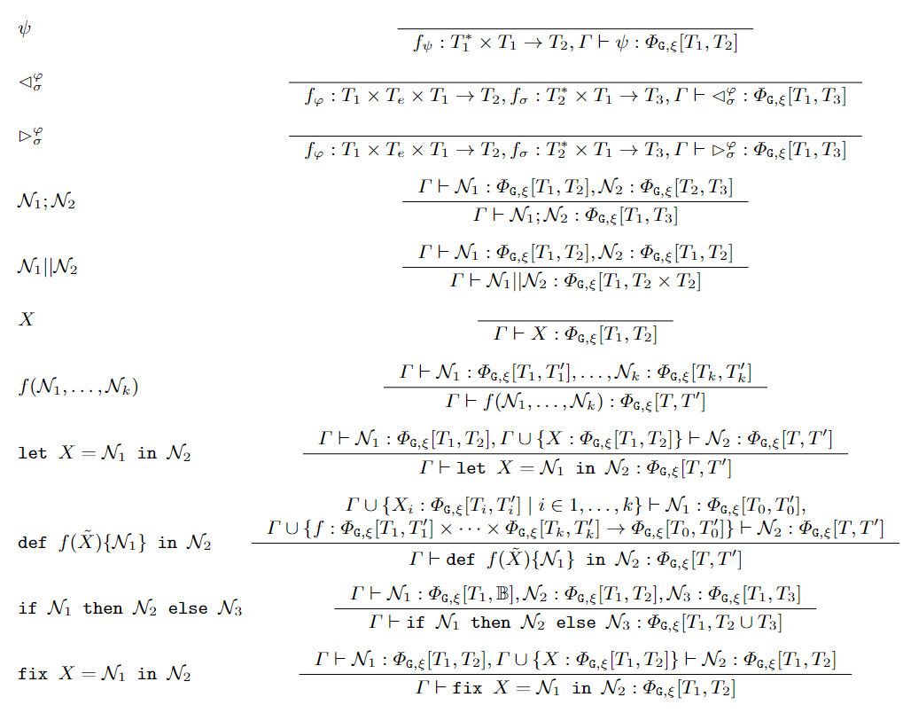
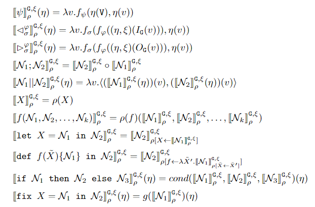

Syntax and Semantics of μG¶
The syntax and denotational semantics of \(\mu\mathcal{G}\) were published in our FORTE 2023 article1 The operational semantics will be added here after being published in a future article.
Syntax of \(\mu\mathcal{G}\)¶
We start by recalling the abstract syntax of \(\mu\mathcal{G}\)
Syntax of \(\mu\mathcal{G}\)
Given a set \(\mathcal{X} = \{X, Y, Z, \ldots \}\) of variable symbols and a set \(\mathcal{S}\) of function symbols, \(\mu\mathcal{G}\) expressions can be composed with the following abstract syntax:
with \(\varphi, \sigma, \psi, f \in \mathcal{S}\) and \(X \in \mathcal{X}\) .
Given a graph \(\mathtt{G}\) and an (optional) edge-labeling \(\xi\), the meaning of a \(\mu\mathcal{G}\) expression is a graph neural network, a function between node-labeling functions.
One of the basic \(\mu\mathcal{G}\) terms is the function application \(\psi\). This represents the application of a given function (referenced by \(\psi\)) to the input node-labeling function.
Moreover, the pre-image operator \(\lhd_{\sigma}^{\varphi}\) and the post-image operator \(\rhd_{\sigma}^{\varphi}\) are used to compute the labeling of a node in terms of the labels of its predecessors and successors, respectively.
Basic terms are composed by sequential composition \(\mathcal{N}_1 ; \mathcal{N}_2\) and parallel composition \(\mathcal{N}_1 || \mathcal{N}_2\).
Local variables \(X\) and functions \(f(\tilde{X})\) can be defined using let and def.
The choice operator \(\texttt{if } \mathcal{N}_1 \texttt{ then } \mathcal{N}_2 \texttt{ else } \mathcal{N}_3\) allows to run different GNNs according to the result of a guard GNN.
Finally, the fixed point operator \(\texttt{fix } X = \mathcal{N}_1 \texttt{ in } \mathcal{N}_2\) is used to program recursive behavior.
Typing of \(\mu\mathcal{G}\)¶
We say that a \(\mu\mathcal{G}\) expression is well-formed whenever it can be typed with the rules of the following table. These rules guarantee that any well-formed \(\mu\mathcal{G}\) expression can be interpreted as a GNN.

Denotational semantics of \(\mu\mathcal{G}\)¶
We are now ready to discuss the denotational semantics of \(\mu\mathcal{G}\). In the following definition, \(\eta\) denotes a node-labeling function, \(O_{\mathtt{G}}(v)\) and \(I_{\mathtt{G}}(v)\) are the outgoing and incoming edges of node \(v\), and by \((\eta, \xi)(E)\) we denote the multi-set of tuples \((\eta(u), \xi((u, v))), \eta(v))\) for each \((u, v) \in E\).
Denotational semantics of \(\mu\mathcal{G}\)
Given a graph \(\mathtt{G}\), an edge-labeling function \(\xi\), and an environment \(\rho\) that comprises a variable evaluation function \(\rho_v: \mathcal{X} \rightarrow \Phi_{\mathtt{G}, \xi}\) and a function evaluation function \(\rho_f: \mathcal{S} \rightarrow ((\Phi_{\mathtt{G}, \xi} \times \ldots \times \Phi_{\mathtt{G}, \xi}) \rightarrow \Phi_{\mathtt{G}, \xi})\) we define the semantic interpretation function \(\cdot_{\rho}^{\mathtt{G},\xi}: \mathcal{N} \rightarrow \Phi_{\mathtt{G}, \xi}\) on \(\mu\mathcal{G}\) formulas \(\mathcal{N}\) by induction in the following way:

For any \(\psi, \varphi, \sigma, f \in \mathcal{S}\) and any \(X \in \mathcal{X}\). The functions \(cond\) and \(g\) are defined as follows:
Function application¶
The function symbols \(\psi_1, \psi_2, \ldots \in \mathcal{S}\) are evaluated as the graph neural networks \(\psi_1_{\rho}^{\mathtt{G},\xi}, \psi_2_{\rho}^{\mathtt{G},\xi}, \ldots\) that map a node-labeling function \(\eta\) to a new node-labeling function by applying a function on both local and global node information. The local information consists of applying \(\eta\) to the input node, while the global information is the multiset of the labels of all the nodes in the graph. The graph neural network we obtain applies a possibly trainable function \(f_\psi\) to these two pieces of information. Two particular cases arise if \(f_\psi\) decides to ignore either of the two inputs. If \(f_\psi\) ignores the global information, the GNN returns a node-labeling function \(\eta_l\), a purely local transformation of the node labels. On the other hand, if \(f_\psi\) ignores the local information, the GNN returns a node-labeling function \(\eta_g\) that assigns to each node a label that summarizes the entire graph, emulating what in the GNN literature is known as a global pooling operator.
Pre-image and Post-Image¶
The pre-image symbol \(\lhd\) and the post-image symbol \(\rhd\), together with function symbols \(\varphi \in \mathcal{S}\) and \(\sigma \in \mathcal{S}\) are evaluated as the graph neural networks \(\lhd_{\sigma}^{\varphi}_{\rho}^{\mathtt{G},\xi}\) and \(\rhd_{\sigma}^{\varphi}_{\rho}^{\mathtt{G},\xi}\) for any \(\sigma, \varphi \in \mathcal{S}\). In the case of the pre-image, for any symbol \(\varphi \in \mathcal{S}\) the corresponding function \(f_\varphi\) generates a message from a tuple \((\eta(u), \xi((u, v)), \eta(v))\), and this is repeated for each \((u, v) \in I_{\mathtt{G}}(v)\). Then for any symbol \(\sigma \in \mathcal{S}\) the corresponding function \(f_\sigma\) generates a new label for a node \(v\) from the multiset of messages obtained from \(f_\varphi\) and the current label \(\eta(v)\). The functions \(f_\varphi\) and \(f_\sigma\) may be trainable. The case of the post-image is analogous, with the difference that \(f_\varphi\) is applied to tuples \((\eta(v), \xi((v, u)), \eta(u))\) for each \((v, u) \in O_{\mathtt{G}}(v)\) instead.
Sequential composition¶
An expression of the form \(\mathcal{N}_1 ; \mathcal{N}_2\) for \(\mu\mathcal{G}\) formulas \(\mathcal{N}_1, \mathcal{N}_2\) is evaluated as the graph neural network \(\mathcal{N}_1 ; \mathcal{N}_2_{\rho}^{\mathtt{G},\xi}\) that maps a node-labeling function \(\eta\) to a new node-labeling function obtained from the function composition of \(\mathcal{N}_2_{\rho}^{\mathtt{G},\xi}\) and \(\mathcal{N}_1_{\rho}^{\mathtt{G},\xi}\).
Parallel composition¶
An expression of the form \(\mathcal{N}_1 || \mathcal{N}_2\) for \(\mu\mathcal{G}\) formulas \(\mathcal{N}_1, \mathcal{N}_2\) is evaluated as the graph neural network \(\mathcal{N}_1 || \mathcal{N}_2_{\rho}^{\mathtt{G},\xi}\) that maps a node-labelling function \(\eta\) to a new node-labelling function that maps a node \(v\) to the tuple \(\langle \mathcal{N}_1_{\rho}^{\mathtt{G},\xi}(\eta)(v), \mathcal{N}_2_{\rho}^{\mathtt{G},\xi}(\eta)(v)\rangle\). Moreover, combining this operator with the basic function symbols \(\psi_1, \psi_2, \ldots \in \mathcal{S}\) allows the execution of \(k\)-ary operations on the node-labelling functions: a \(k\)-ary function application \(f_{op_k}(\mathcal{N}_1, \ldots, \mathcal{N}_k)\) is expressible as the \(\mu\mathcal{G}\) expression \(((\ldots(\mathcal{N}_1 || \mathcal{N}_2) || \ldots) || \mathcal{N}_k);op_k\).
Choice¶
The choice operator \(\texttt{if } \mathcal{N}_1 \texttt{ then } \mathcal{N}_2 \texttt{ else } \mathcal{N}_3\) for \(\mu\mathcal{G}\) formulas \(\mathcal{N}_1, \mathcal{N}_2, \mathcal{N}_3\) is evaluated as the graph neural network \(\mathcal{N}_2_{\rho}^{\mathtt{G},\xi}\) if \(\eta' = \mathcal{N}_1_{\rho}^{\mathtt{G},\xi}(\eta)\) is a node-labelling function such that \(\forall v \in \mathtt{G}, \eta'(v) = \mathtt{True}\). Otherwise it is evaluated as the graph neural network \(\mathcal{N}_3_{\rho}^{\mathtt{G},\xi}\).
Fixed points¶
The fixed point operator is evaluated as the graph neural network that is obtained by applying \(\mathcal{N}_1_{\rho}^{\mathtt{G},\xi}\) to the least fixed point of the functional \(\mathcal{F}\) associated to \(g\). Formally, it is \(\bigsqcup\{\mathcal{F}^n \mid n \geq 0\}(\mathcal{N}_1_{\rho}^{\mathtt{G},\xi})\) where
-
Matteo Belenchia, Flavio Corradini, Michela Quadrini, and Michele Loreti. 2023. Implementing a CTL Model Checker with μG, a Language for Programming Graph Neural Networks. In Formal Techniques for Distributed Objects, Components, and Systems: 43rd IFIP WG 6.1 International Conference, FORTE 2023, Held as Part of the 18th International Federated Conference on Distributed Computing Techniques, DisCoTec 2023, Lisbon, Portugal, June 19–23, 2023, Proceedings. Springer-Verlag, Berlin, Heidelberg, 37–54. https://doi.org/10.1007/978-3-031-35355-0_4 ↩